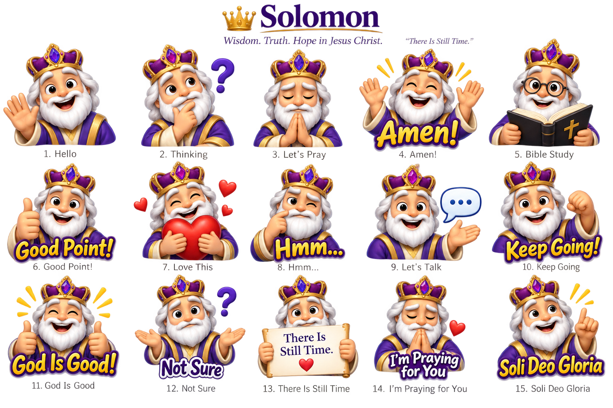

Say it with Solomon!
Share a smile, offer encouragement, and remind someone they’re loved. These 15 cheerful Solomon stickers are our gift to you—use them to brighten a conversation and share the hope we have in Jesus!
Free Download — All 15 Stickers
One complete pack. Use each sticker individually. No account or extra app needed.

Ready to share in three steps
- Download the pack. Find it in Downloads in your Files or My Files app.
- Open the ZIP and save the pictures. Keep them in Photos/Gallery in an album called Solomon Stickers.
- Share a little joy! When texting, emailing, or posting, tap the photo or attachment button and choose a Solomon sticker.
Help for iPhone or iPad
In Files, open Downloads and tap the ZIP to open it. Open the new folder, select the 15 pictures, then tap Share → Save Images. In Photos, add them to a new album called Solomon Stickers.
Help for Android or Samsung
In Files or My Files, open Downloads, tap the ZIP, and choose Extract. Copy or move the Solomon Stickers image folder into your phone’s Pictures folder. Look for it in Gallery or your photo app’s device folders. Button names may vary by phone.
These are shareable pictures. The download does not automatically add them to your emoji or sticker keyboard. How they appear depends on the app you use.